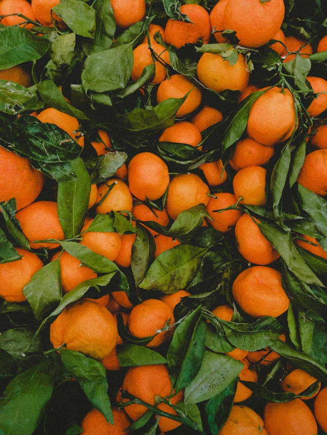
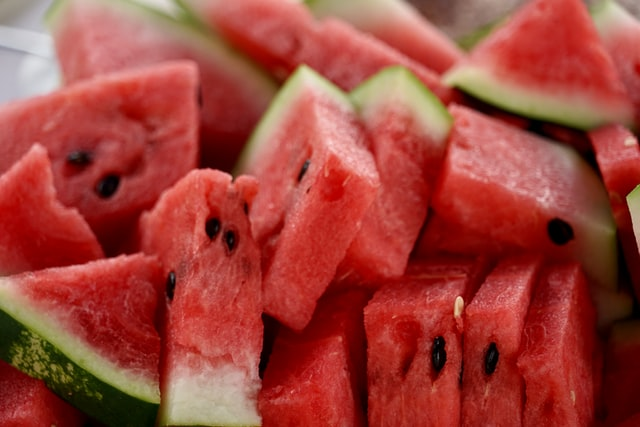
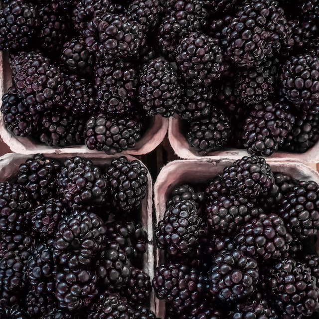
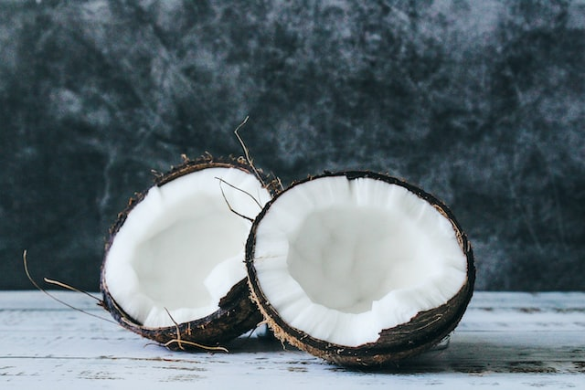

Frutas
-
.jpg)
Previene el estreñimiento. Su alto contenido en fibra favorece el tránsito intestinal y ayuda a la digestión de las grasas. Poder antioxidante. Su alto contenido en estos compuestos favorece la regeneración celular. Mejora el sistema inmune. Su contenido en vitamina C aumenta las defensas de nuestro organismo.
$4.000

 (1).jpg)
El Mango Tiene Potencia Nutricional Una porción de 3/4 de taza de mango contiene un 50% de su ración diaria de vitamina C, 8% de su ración diaria de vitamina A, y un 8% de la ración diaria de vitamina B6. Estas vitaminas contenidas en el mango pueden ayudar a sustentar el sistema inmunológico de su cuerpo
$2.000
.jpg)
Las fresas son una buena merienda para perder peso o mantenerlo. Son dulces, por lo que pueden ser un buen reemplazo de gallegas o dulces para satisfacer a los golosos, también después de la comida o la cena. Cada fresa suele equivaler a cuatro calorías. Y además, la gran cantidad de fibra ayuda a retrasar la digestión y regula los niveles de azúcar en la sangre.
$3.000
.jpg)
Reducción del riesgo de coágulos sanguíneos. Reducción del colesterol de lipoproteínas de baja densidad (LDL, o «malo») Prevención de daños en los vasos sanguíneos del corazón. Ayuda para mantener una presión arterial saludable
$5.000
La naranja es una fruta rica en fibras, vitamina A, B y C, flavonoides y betacarotenos, con propiedades antioxidantes y antiinflamatorias, que ayuda a combatir el envejecimiento prematuro, a reducir el colesterol malo, a proteger el organismo de enfermedades cardiovasculares y a fortalecer el sistema inmunitario. Asimismo, la naranja también posee minerales como potasio y calcio, necesarios para regular la presión arterial.
$3.000
La sandía es una de las frutas veraniegas por excelencia. Refresca y es altamente hidratante pero, además, cuenta con un gran número de nutrientes muy beneficiosos para nuestra salud. Contiene vitamina C, vitamina A, potasio, magnesio, licopeno y betacaroteno. En concreto, su cantidad de licopeno y betacaroteno aumenta cuanto más madura está la sandía así que es preferible comerla bien madura para aprovechar al máximo sus propiedades.
$12.000
Es una gran fuente de fibra y de vitamina C Y por la presencia de las vitaminas C y A contribuyen a nutrir los huesos, los dientes, la piel, la generación de colágeno o la absorción de hierro
$2.000
Por su constitución el coco es una fruta con propiedades de la vitamina E de importante acción antioxidante sobre la piel y es ideal para las personas que se encuentran con debilidad. VITAMINAS: C 39 MG.) B1 (0,06 mg), B2(01,8 mg). MINERALES: Potasio (398 mg), fósforo (110 mg), calcio (16 mg), hierro (4 mg).
$4.000